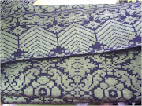
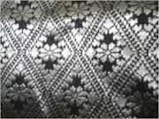
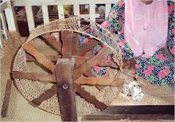
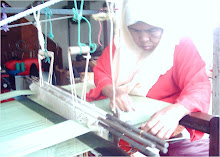
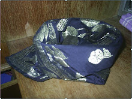
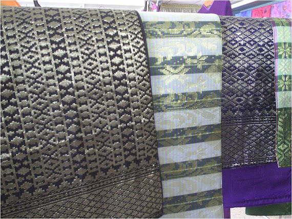

Sudah menjadi lumrah setiap insan sukakan sesuatu yang indah dan cantik. Setiap insan juga secara tidak disedari mempunyai deria untuk memilih dan tidak pernah pula sesuatu yang dipilih itu tidak cantik. Sesuatu yang indah itu mempunyai ‘seni’ yang tersendiri dan seni yang paling indah ialah ‘hanya’ yang dikurniakan oleh Allah S.W.T. dan kita, tanpa disedari memang diselubungi oleh seni yang indah itu dalam kehidupan seharian kita.
Memang tidak pernah terfikir oleh kita bahawa nenek moyang kita dahulu telah memahami dan menghayati ‘seni’ yang dihasilkan oleh mereka ternukil dari deria kreativiti serta bakat semulajadi yang dianugerahkan oleh Tuhan Yang Maha Kuasa. Kehalusan dan keunikan keaslian reka bentuk yang diilhamkan melalui ide dari alam semesta ciptaan Tuhan merupakan satu hasil kreatif yang akan menjadi khazanah ‘seni’ yang tidak ternilai.
Keaslian ‘pereka bentuk’ istimewa ini tidak dapat dinilai harganya secara khusus. Cetusan ide yang diluahkan terus menjadi satu visual yang sungguh ekspresif dan unik hinggakan ianya menjadi satu bahan komoditi ‘seni’ yang berharga.
Kehalusan reka bentuk dan buatan kain songket bukan sahaja melambangkan kekayaan khazanah seni tekstil Melayu tradisional, malah ianya adalah sebagai satu penggerak ide dan pemangkin kepada pereka-pereka tekstil generasi kini, khususnya pelajar-pelajar yang sedang mendalami selok-belok seni ini.
Kraf Songket yang sangat popular di negeri Terengganu dan Kelantan ini perlu diwarisi oleh generasi masa kini dan akan datang. Pengenalan kepada seni kraf ini dapat memberi pendedahan kepada pelajar sekolah sama ada Sekolah Rendah atau Sekolah Menengah. Sukatan Pelajaran Pendidikan Seni Visual di Sekolah juga perlu menerapkan unsur-unsur kraf tradisional ini.
Motif Songket

Motif Bunga Pecah Lapan

Proses Tenunan

PROSES TENUNAN

TENGKOLOK

Pengikut
Arkib Blog
Mengenai Saya
Songket Kontemporari

Motif Pucuk Rebung

Tiada ulasan:
Catat Ulasan